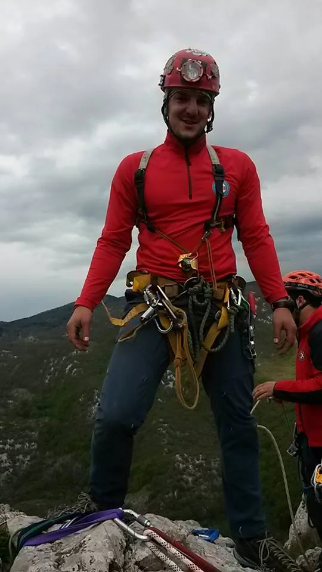

45. zagrebačka speleoškola
Upravo je to lijepo vrijeme meni jedinom izazivalo glavobolju, jer tko će natjerat 20 mladih ljudi da nešto radi, a vani proljetno sunce, Korana taman za kupanje, na vatrici se krčka gulaš, u hladnoj špilji hlade se…

Voditelj: Marin Mustapić
Iz pera vođe škole Marina:
"Svi izleti odrađeni su izuzetno kvalitetno, ponajprije radi dobre volje, znanja i iskustva svih instruktora i demonstratora. Zahvaljujem se svima na velikoj pomoći te na velikoj želji svih instruktora za prenošenjem znanja na nove generacije Velebitaša. Gotovo sve izlete pratilo je lijepo vrijeme što nam je omogućilo i olakšalo duga druženja uz vatru i gitaru. Svakim izletom produbljivao se taj osjećaj zajedništva i prijateljstva uz pjevanje starih Velebitaških „hitova“ te stvaranje novih, inspiriranih brojnim anegdotama nastalim na školi.
Upravo je to lijepo vrijeme meni jedinom izazivalo glavobolju, jer tko će natjerat 20 mladih ljudi da nešto radi, a vani proljetno sunce, Korana taman za kupanje, na vatrici se krčka gulaš, u hladnoj špilji hlade se pivice za navečer…ma 'ko će sad na špagu... Ali ubrzo su školarci i sami shvatili da je sunce još ljepše, Korana još toplija, a gulaš i pivica pašu još i više nakon malo muke i „teškog rada“ na užetu ili u jami. I tada svatko navuče svoj pojas, kaciga na glavu i za mene su svi problemi riješeni. Dobro ajde ne baš svi, ali barem sam miran do spremanja i brojanja opreme na kraju izleta. A tada, iz daljine zagrmi Bubin glas „di su moje gurtneeeeeeeee“, „Ne Luana to je stremen nije gurtna…“, „A jel trebamo brojat i ove pločice sa nekim šarafima?“, „Ja nemam popis svoje opreme!“,… I eto opet glavobolje.
Međutim, velikom voljom i željom za učenjem sve se vrlo brzo mijenjalo, u pozitivnom smislu, vrlo pozitivnom. Već na sljedećem izletu, izlazim ja iz Jopićeve zadnji, a kad ono, imam što za vidjeti. Sve raspremljeno i pospremljeno. 24 transportne vreće leže na podu poredane po brojevima, ne fali ništa, samo špaga na kojoj ja još visim. Kakva sreća, uspjelo je!
Kako se škola bližila kraju imali smo sve, hrane svakim izletom sve više i više, oprema na broju, pjesme se pjevaju, uzlovi se vežu žmirećki, još samo da se nađe koja topla vreća da ne slušamo ujutro „Evo i to sam probala i više nikad“ i svi problemi nestaju.
I tako malo po malo došli smo do zadnjeg izleta. Rokina bezdan, vertikala, svi se školarci malo boje, imaju tisuće pitanja. Neki instruktori i školarci otišli su već u petak kako bi postavili jamu da u subotu ne gubimo vrijeme. Svi ostali krenuli smo u subotu ujutro . Kiša lijeva ko iz kabla. Taman dok smo bili pred Volanom zove Ana i kaže da se u jamu ne može. Šok. Od obilne kiše otvorio se slap na pola vertikale. Kaže da su oni potpuno mokri i da cijelu noć pada po njima te da će doći dolje do Volana s nama popit kavu pa da se dogovorimo za dalje. Pošto kiša nije imala namjeru stati, naši Prpići povukli su neke veze i nabavili nam ključ od Lovačke kuće. Kuću smo iskoristili da se ugrijemo, najedemo i održimo usmeni ispit za školarce. Nakon ispita krenuli smo na jamu. Razvukli cerade, zapalili vatru, a Petko je po običaju počeo sa kuhanjem. Kada je nama smetalo malo kiše?! Kako je dan odmicao tako je i kiša lagano slabila, a s njom i slap u jami. Fešta je počela, završni tulum, opet gitara, kazu, pjevanje i tako dugo u noć...
U nedjelju nas je probudilo sunce, prekrasan dan. Slap je gotovo nestao, svi su se polako počeli spremati i jedan za drugim kretali u jamu. Njihova lica na izlazu govorila su sve, bilo nam je teško, ali definitivno želimo još.
Na kraju bih se još jednom želio zahvaliti svima koji su sudjelovali na školi na velikoj pomoći i mislim da bez razmišljanja mogu ustvrdit – Velebitaški duh je prenesen!"
Školu je upisalo 23 polaznika, a završilo njih 20. Troje polaznika odustalo je od škole iz osobnih razloga. Škola je održana u razdoblju od 11. ožujka do 22. travnja 2015. godine, prema programu školovanja Komisije za speleologiju Hrvatskog planinarskog saveza. Teorijska osposobljavanja polaznika odrađena su srijedom u prostorijama PDS Velebit gdje su polaznici slušali ukupno 15 predavanja. Na terenu je odrađeno ukupno šest izleta od čega tri jednodnevna i tri dvodnevna. Osim toga, polaznicima je dodatno organizirano vježbanje speleoloških tehnika na tunelu svaki četvrtak za vrijeme trajanja škole. Prije zadnjeg, ispitnog izleta, instruktori su polaznicima organizirali zajedničko učenje svih vještina potrebnih za stjecanje naziva speleolog pripravnik.
Školu je upisalo 23 polaznika, a završilo njih 20. Troje polaznika odustalo je od škole iz osobnih razloga. Škola je održana u razdoblju od 11. ožujka do 22. travnja 2015. godine, prema programu školovanja Komisije za speleologiju Hrvatskog planinarskog saveza. Teorijska osposobljavanja polaznika odrađena su srijedom u prostorijama PDS Velebit gdje su polaznici slušali ukupno 15 predavanja. Na terenu je odrađeno ukupno šest izleta od čega tri jednodnevna i tri dvodnevna. Osim toga, polaznicima je dodatno organizirano vježbanje speleoloških tehnika na tunelu svaki četvrtak za vrijeme trajanja škole. Prije zadnjeg, ispitnog izleta, instruktori su polaznicima organizirali zajedničko učenje svih vještina potrebnih za stjecanje naziva speleolog pripravnik.